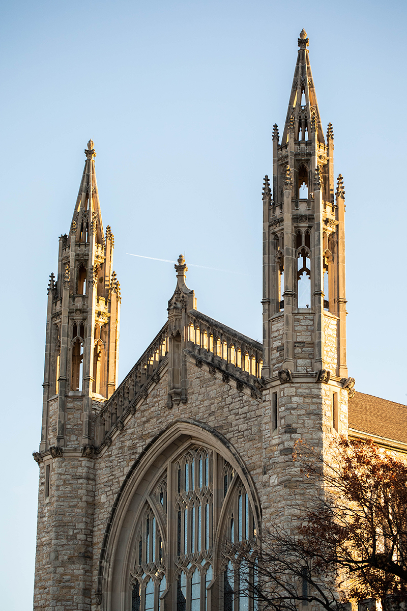
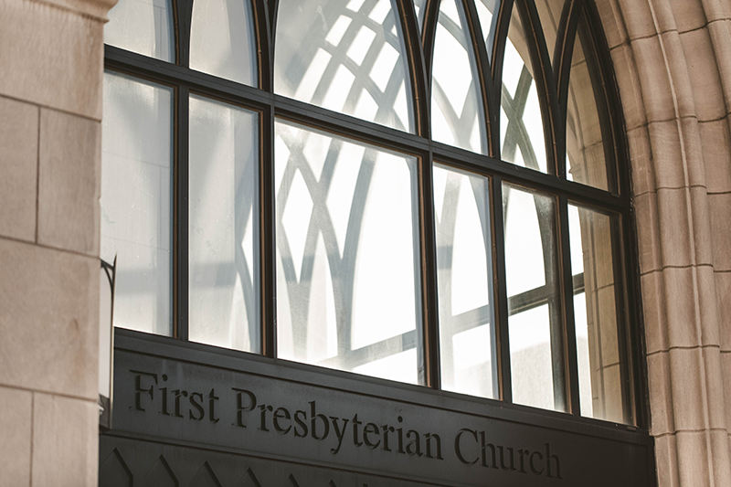
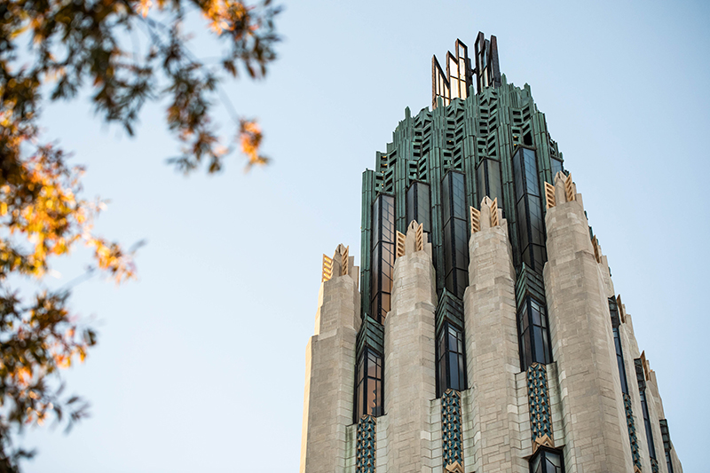
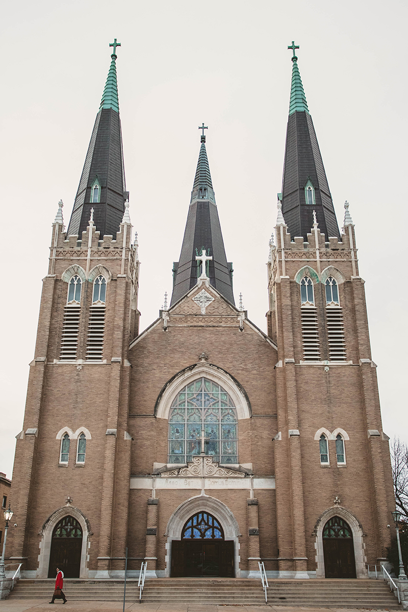

Heaven on Earth
The past, present, and future of downtown’s Cathedral District

Boston Avenue United Methodist Church
Valerie Wei-Haas
The church bells chime through the steel and glass towers of downtown as they have done thousands of Sundays before. Their sequential cadence competes with the whistling of the wind on this bitter, cold December morning. It is a familiar, even comforting sound. Gentle rhythms echoing from the past, rising toward heaven above, calling in the flock from all corners of the city.
Thousands of Tulsans attend worship services downtown every week, most of them at the southern end of the IDL known as the Cathedral District. Many of these people drive miles out of their way, past other churches, to come here. In our culture of convenience, with so many obligations and distractions competing for our time, why are people still drawn to worship at a cathedral?
“People want this sense of awe, this sense of beauty,” said Rev. Aaron Tiger, executive pastor of First United Methodist Church. “The purpose of a cathedral is to make all of us feel small, so that God feels big.”
Rev. Deron Spoo of First Baptist Church said being in a place with a century of history can add to the church experience. “To sit in a room and worship where people have been worshipping 100 years, there’s a sense of continuity,” he said. “Did a person, when they leave here, say ‘I met with God’? I would drive a long, long way to experience that.”
Whether it is to gaze with wonder at the work of human hands and divine inspiration, or to connect with the past—and, perhaps, with what awaits us beyond—what draws people here to worship is as unique as the worshipers themselves. So it has been for decades.
While it is one of the newest designated zones downtown, the Cathedral District is home to some of Tulsa’s most enduring structures. Their towering, sharply-pointed spires, carefully-cut stonework, and gothic arches are as much a part of downtown’s landscape as the theaters, arenas, hotels, and bars that followed. Maybe even more so, as the churches were here first and still stand serving their purpose today.
Most were founded well before statehood. First Presbyterian, Tulsa’s oldest church, was founded in 1885. Then came First United Methodist in 1886, followed by Boston Avenue United Methodist in 1893. Holy Family Cathedral was dedicated in 1914, while the signature domed roof of First Church of Christ, Scientist has stood in its present spot since 1918.
Each church has served Tulsa’s faithful for more than a century. A long time, to be sure, though they are adolescents when compared to their European forebears. Westminster Abbey in London, Notre Dame in Paris, and St. Peter’s Basilica in Rome are synonymous with their cities and emblems of European culture. But while each welcomes millions of visitors annually, most tourists who enter their doors do not seek salvation, but selfies. Not enlightenment, but an experience. Thousands of churches like these populate Europe. Most are no longer active places of worship, but remnants of the old world. Europe’s churches are more like museums or monoliths—magnificent, much-admired structures left over from a superstitious era, beautiful, but ultimately irrelevant in our present, secular age.
That the same destiny could confront downtown’s churches is jarring to consider, perhaps even to non-believers. The churches have been here longer than living memory. Generations past and present have memories there. But while familiarity breeds comfort, it risks becoming invisible against Tulsa’s ever-changing backdrop. We’re a city on the move, but stone purposefully stands still.
 America has proven more immune to the rise of secularism than Europe, especially in the Bible Belt. Even so, 24 percent of Americans report being religiously unaffiliated, according to a 2017 study by the Public Religion Research Institute. Of those, 16 percent describe themselves as a “religious person,” showing that rather than agnosticism or atheism, a “nothing in particular” spiritualism is the growing trend. Besides the rise of the “nones,” religious observance and affiliation among the faithful is changing as well.
America has proven more immune to the rise of secularism than Europe, especially in the Bible Belt. Even so, 24 percent of Americans report being religiously unaffiliated, according to a 2017 study by the Public Religion Research Institute. Of those, 16 percent describe themselves as a “religious person,” showing that rather than agnosticism or atheism, a “nothing in particular” spiritualism is the growing trend. Besides the rise of the “nones,” religious observance and affiliation among the faithful is changing as well.
Both Protestant and Catholic churches are experiencing a demographic shift. Since 2006, white evangelical protestants dropped from 23 to 17 percent, white mainline Protestants from 18 to 13 percent, and white Catholics from 16 to 11 percent. Today more than one-third of Protestants are now nonwhite and 36 percent of Catholics are Hispanic. When looking at followers under age 30, the numbers are even larger. Only half of evangelical Protestants under 30 are white, while 52 percent of Catholics under 30 are Hispanic.
These are all national trends, and Oklahoma is following its own path on certain figures. According to the 2014 Religious Landscape Study by the Pew Research Center, while evangelical Protestantism and Catholicism declined in Oklahoma (from 53 to 47 percent and 12 to 8 percent, respectively), mainline Protestantism grew from 16 to 18 percent.
Analyzing data can be as complicated as memorizing the catechism, but practicing theology is more than following trend lines. What is certain is that the people downtown’s churches were built to serve a century ago are not the same people they serve today. Even the mightiest structures cannot withstand the winds of change, as Europe’s churches show. Does a similar fate await the churches of downtown Tulsa?
“It could happen,” said Rev. David Wiggs, senior minister of Boston Avenue United Methodist Church. “Whether we become more or less relevant will depend on our ability to observe and understand our ever-changing culture and develop meaningful ministry for people today.”
“It is a great opportunity to challenge our cultural grounding in Christianity, especially here in the Bible Belt, and rediscover the radical nature of the Gospel,” said Rev. Ryan Moore, co-pastor for First Presbyterian Church. Rev. Moore lived in Europe for a few years and said he “discovered a European church that is far more missionary, mobile and local. I think we’ll see that here at home in the years and decades to come.”
The idea of a mission-driven church—one unbound by a building, which asks for more from its followers than a few hours every Sunday—is a sentiment shared by pastors across downtown.
“One of the draws of being a downtown church is we invite people not to sit here, but to serve,” Rev. Spoo said.
“That’s the call of every Christian community,” Rev. Moore said. “To seek the welfare—spiritually, economically, socially—of the people and places to which they find themselves.”
With the homeless population downtown, serving the poor is critical to each church’s mission. Likewise, many are also adding contemporary-style worship services to complement their traditional service. It’s a way to attract parishioners who come from a mega-church background.
Beyond community outreach and contemporary services, the churches are ensuring their place in downtown’s culture through the designation of the Cathedral District itself. “The coalition of property owners that became the Cathedral District wants to create its place in the culture of downtown,” said Brenda Reed, business administrator for Boston Avenue. “The Cathedral District was formed to promote, develop and revitalize the area.”
As far as branding an area, the Cathedral District is catchy, even if it’s technically inaccurate. “Cathedral” comes from the Latin word for “seat,” and denotes the church in a Catholic diocese that houses the seat of the local Bishop. According to the literal definition, the only Cathedral in the district is Holy Family Cathedral. But with Tulsa Community College’s Metro campus, Foolish Things Coffee Co., and Public Services Company of Oklahoma as members, the Cathedral District’s vision extends beyond the pulpit.
“The Cathedral District isn’t about the churches,” Reed said. “It is about developing a vibrant walkable community that is in connection with the entire downtown area. I believe the churches will benefit as the area changes and becomes a more inviting place to spend time.”
It is a goal that is already being realized. With more people coming downtown over the past decade, more people are choosing to worship there as well.
“When you have people, you need a church,” Rev. Spoo said, who notes that weekly attendance was much lower when he arrived at First Baptist 18 years ago. Other ministers have noticed the same uptick.
By enhancing visibility and walkability, the neighborhood association known as the Cathedral District hopes to create a more spirited community. But for the district’s namesake churches, the challenge remains to maintain a spiritual core.
“If we serve people effectively then the churches becoming museums will not occur here as it has in Europe,” Rev. Wiggs said.
“There’s a perception that you have to be a certain kind of person to worship at a downtown church—if the building is that pretty, my life must be as well,” Rev. Tiger said. “It’s up to our congregations to say, ‘We’re all welcome in this space.’”
Whether downtown’s churches remain thriving places of worship or become remnants of a bygone era, nobody knows. To the churches themselves, it is less about the building and more about the people they serve. Whatever happens next ultimately comes down to faith.
“A church building serves its purpose in its time” said Rev. Spoo. “A flower is beautiful even if it’s not going to be around forever. I hope we stay vibrant, but that’s up to the people and up to God to see us through.”


.jpg)
.jpg)